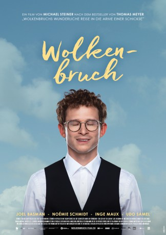

#10921 Wolkenbruchs wunderliche Reise in die Arme einer Schickse
 
 IMDB-Wertung: 7.0 / 10
IMDB-Wertung: 7.0 / 10  Metascore: 0
Metascore: 0 
Young orthodox Jew Mordechai Wolkenbruch, called Motti, has a serious problem: All the women, whom his mame introduces to him as potential wives, look just like her. Whereas Laura, his fellow student, does not at all - but unfortunately she is a schikse: She wears pants, has a nice tuches, drinks gin and tonic and swears. Motti begins to have doubts: Is the predetermined path given by his parents the road for him to follow? His obedience towards his mother's disturbing methods starts to fade, whereas at the same time his passion for Laura grows. So things take their course. And very soon Motti comes to the conclusion: even schiksen can be totally nuts.
Jahr: 2018
Dauer: 93 Minuten
FSK:
Land: Schweiz Studio: DCM DistributionTonspuren:
Untertitel:
Auflösung: 1080p (1920x1040) Größe: 5580 MB
Genre: Drama, Komödie
Regisseur: Michael Steiner
Drehbuch: Thomas Meyer
Soundtrack: Adrian Frutiger, Michael Schertenleib
Darsteller:
- Noémie Schmidt als Laura
 Joel Basman als Motti
Joel Basman als Motti Sunnyi Melles als Frau Silberzweig
Sunnyi Melles als Frau Silberzweig- Rachel Braunschweig als Frau Süsskind
 Udo Samel als Tate
Udo Samel als Tate- Meytal Gal als Jael
- Oriana Schrage als Dana Wolkenbruch
- Lena Kalisch als Michèle Blattgrün
- Anina Mutter als Pflegerin
- Alexander Seibt als Dozent
- Klemens Niklaus Trenkle als Jewish Men (uncredited)
- Inge Maux als Mame
- Friederike Frerichs als Bube Wolkenbruch
- Michael Rutman als Herr Bernstein
- Kamil Krejcí als Schmulik
- Andreas Pegler als Optiker Sternlicht
- Shelley Kästner als Frau Freudenberg
- Kaspar Weiss als Sanitäter
- Michael von Burg als Schlote Wolkenbruch
- Jessica Oswald als Wanda
- Thomas Städeli als Doktor auf Entbindungsstation
- Philippe Graber als Optiker
- Kay Gisela als Boyfriend Wanda
- Zoe Simijonovic als Receptionist
- Aaron Arens als Yossi
- Kay Kysela als Boyfriend Wanda
- Eylon Kindler als Rabbiner Wolf
- Siegmund Tischendorf als Audifahrer
- Tatjana Ochsner als Student
- Lea Whitcher als Brache Freudenberg
- Judith Goldberg als Ruth Wolkenbruch
- Ray Baer als Frau Bernstein
- Joey Zimmermann als Herr Süsskind
- Oliver Rickenbacher als David Wolkenbruch
Datei: X:\2018(N-Z)\Wolkenbruchs wunderliche Reise in die Arme einer Schickse (2018, FSK, 1920x1040).mkv seit 03.04.2019
Festplatte: HD 2018(G-Z)-2019(A-Z)
 Es gibt insgesamt 172 Filme in der Gruppe '2018(N-Z)'
Es gibt insgesamt 172 Filme in der Gruppe '2018(N-Z)'